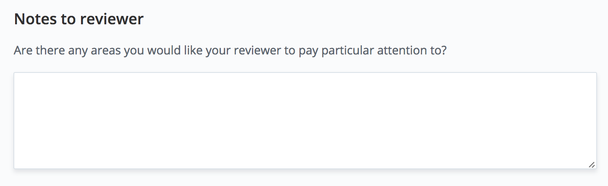

Score Keeper App
Implement an app to track scores between two teams within a basketball game.
Design and implement an app to track scores between two teams playing a game.
Before You Submit
Be sure you follow the steps to prepare your project for submission, clean your build, review the project rubric, and zip your project files.
Submitting Your Project
To submit your project, you will upload your zip file.
On the submission page, you'll see a Notes to reviewer section (image below) -

In order to help project reviewers test and troubleshoot the project, please provide the devices (emulator and physical) and API level on which you tested your work. Note, providing this information does not guarantee the review will be done on the exact same device type(s); however, it will assist in providing a more efficient review experience for you as a student.
You can also provide any other additional notes to the reviewer in that section.
What to Expect After Submitting
It can take us up to a week to grade the project, but in most cases it is much faster. You will get an email when your submission has been reviewed.
Your reviewer will provide a code review with helpful comments and review your project against the project rubric.
Project Submission Checklist
Before submitting your project, please review and confirm the following items.
I am confident all rubric items have been met and my project will pass as submitted.
Project builds correctly without errors and runs.
All required functionality exists and my project behaves as expected per the project's specifications.
Once you have checked all these items, you are ready to submit!